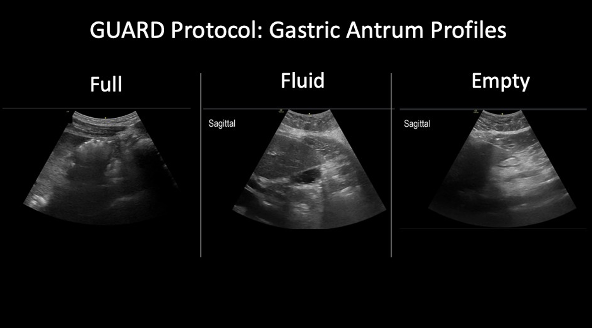

POCUS confirms endotracheal intubation by identifying the trachea (single air-tissue interface) vs. esophageal intubation (“double tract sign”). Faster than waveform capnography in cardiac arrest where ETCO2 may be unreliable.
Tracheal Ring Sign
Transverse view of trachea: single hyperechoic curved line (air-mucosal interface) with posterior ring-down artifact. Correct ETT placement in trachea shows this single interface.
Double Tract Sign
Esophageal intubation: two parallel air-mucosal interfaces side by side (trachea + air-filled esophagus). Pathognomonic — extubate immediately.
Bilateral Lung Sliding
After intubation: bilateral sliding confirms bilateral ventilation. Absent unilateral sliding = mainstem intubation. Withdraw ETT until bilateral sliding returns.
Diaphragm Motion
Subcostal M-mode: bilateral diaphragm descent with positive pressure breath confirms bilateral ventilation. Alternative when lung windows are poor.
12.2 Cricothyroid Membrane (CTM) Identification
Pre-oxygenation POCUS of the anterior neck can identify the CTM in <30 seconds — provides precise localization for surgical airway, especially in obese patients, neck masses, and radiation changes where landmarks are impalpable.
CTM Identification — Sitges Method
Linear probe | Sagittal midline anterior neck | Identify tracheal rings (hyperechoic curved lines = “string of pearls”) | Slide cephalad: cricoid cartilage (continuous ring) → CTM (hypoechoic gap) → thyroid cartilage (wedge-shaped) | Mark CTM midpoint
POCUS CTM Accuracy
POCUS vs. palpation: 100% vs. ~71% accuracy for correct CTM identification. Advantage increases substantially with BMI >30 and anterior neck pathology. Mean CTM dimensions: 2.2–3 cm wide, 0.9–1.2 cm tall.
12.3 Gastric POCUS — Aspiration Risk
Gastric content volume assessment informs RSI decision-making. Right lateral decubitus (RLD) antrum view is validated.
| Antral Finding | Status | Approx Volume | Action |
|---|
| Flat / collapsed (Grade 0) | Empty stomach | <100 mL | Standard RSI; low aspiration risk |
| Small fluid (Grade 1) | Fasted, minimal fluid | 100–200 mL | RSI with standard precautions |
| Large fluid or solid (Grade 2) | Full stomach | >200 mL or solid content | Full stomach precautions; consider delay, awake intubation, or modified RSI |
Gastric Antrum Technique
Curvilinear probe | Right lateral decubitus | Epigastric transverse | Antrum between liver (right) and aorta (left posterior) | Fluid: anechoic | Solid: heterogeneous “frosted glass”
Validated formula (Perlas 2013): Volume (mL) = 27.0 + 14.6 × RLD-CSA – 1.28 × age. CSA = antral cross-sectional area in RLD.

GUARD Protocol: gastric antrum profiles in right lateral decubitus — Full (solid content, left), Fluid (middle), and Empty (right). Sagittal views labeled.